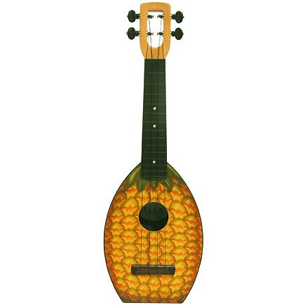
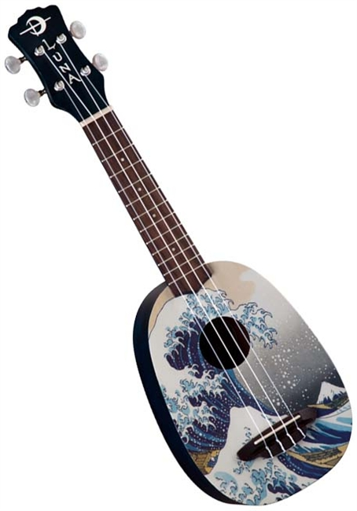
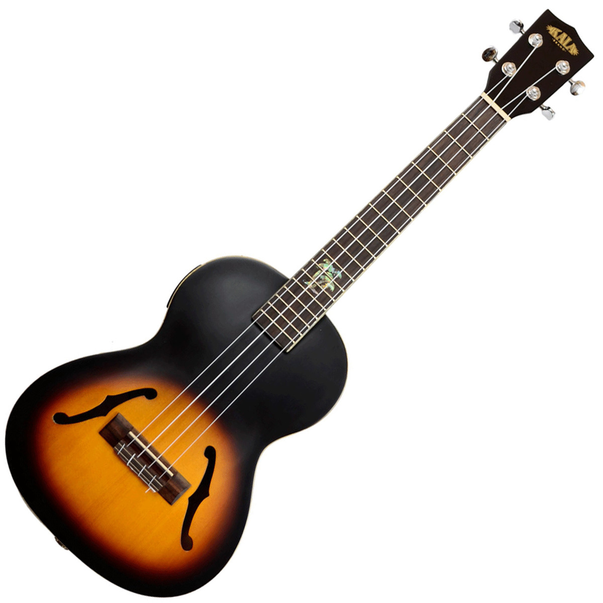
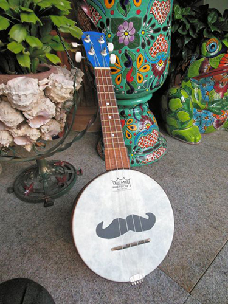

אוהבים לבהות ביוקולליים? איזה מוזרים אתם! מוזמנים להיכנס לגלריה.
פינת היוטיוב השבועי:
אחד מנגני היוקוללה המחוספסים ביותר שהיו אי פעם (והתחרות לא קשה בכלל!) בביצוע מחוספס וצורם כהלכה לנירוונה.
מומלץ לבדוק את ערוץ היוטיוב שלו המוקדש כולו לביצועים נוספים מאותו הסגנון.